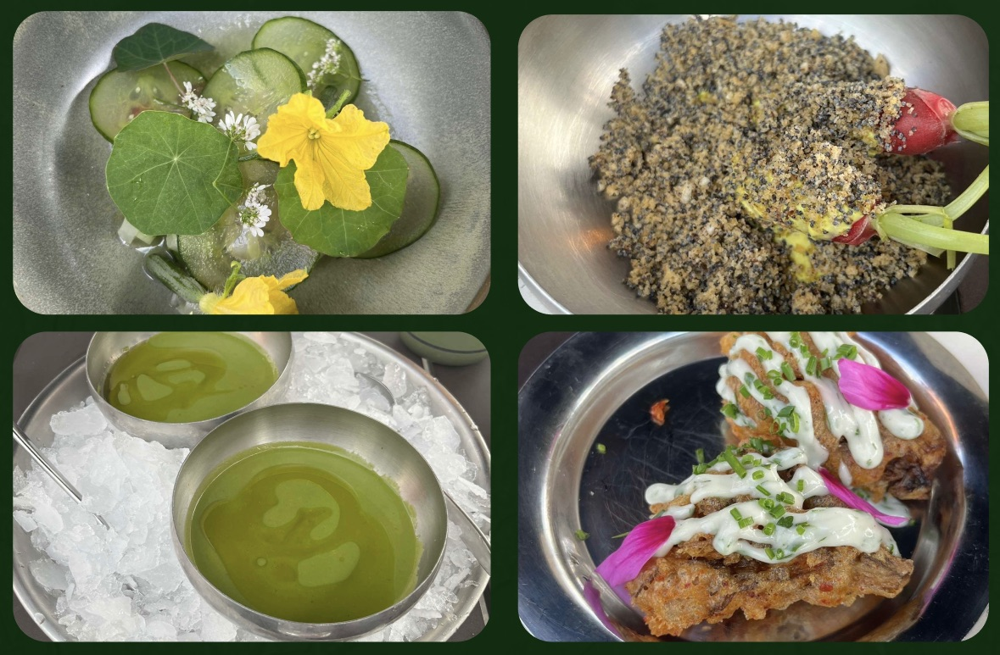
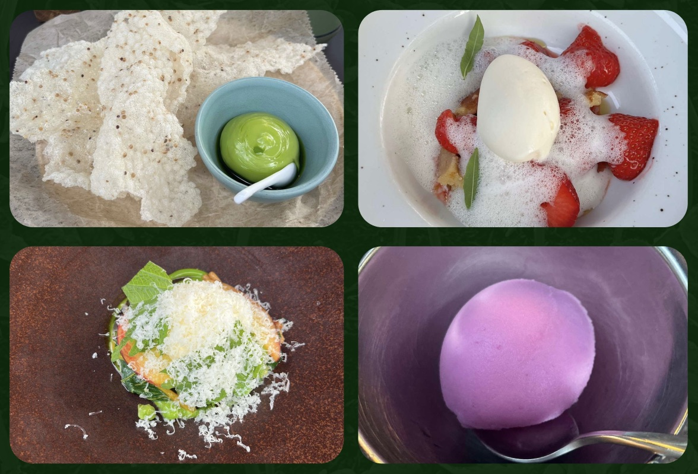

Restaurant De Kas
Restaurant de kas is een restaurant in het Frankendael park, Amsterdam oost. Het restaurant zit in een lege kas die is gebouwd in 1927. Deze kas is toen gebouwd om andere parken is de stad te kunnen voorzien van bomen, grassen en exoten als platen. Na dat de vraag afnam van deze platen werd de kas leeg gehaald en klaar gemaakt om gesloopt te worden. Later is besloten deze kas toch niet te slopen en om te bouwen tot restaurant, met uitzicht op de tuin waar alle producten zelf gekweekt worden. Zo werd de kas een van de eerste farm to table restaurants ter wereld.
Het eten wat word bereid bij restaurant de kas is per seizoen anders, dit komt natuurlijk omdat in de zomer hele andere groentes en platen gekweekt worden als in de winter. Zo hebben zij een vaak wisselend menu die altijd verrast. Je kan kiezen uit een menu die zelf door de chefs is samengesteld of zelf een gerecht van de menukaart kiezen.
